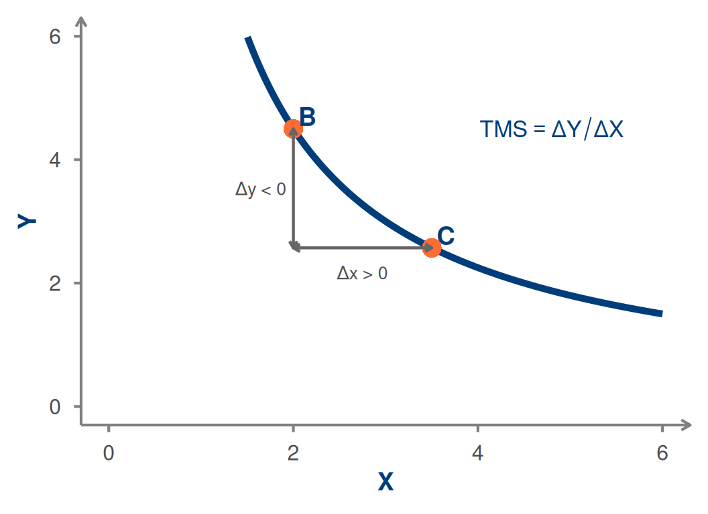
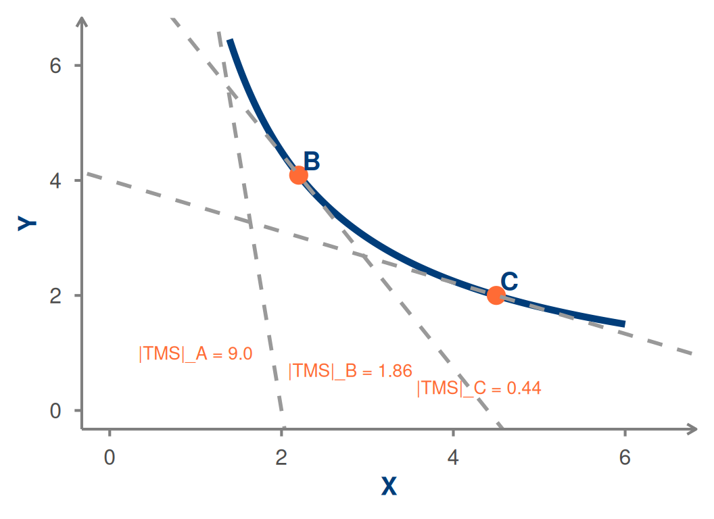
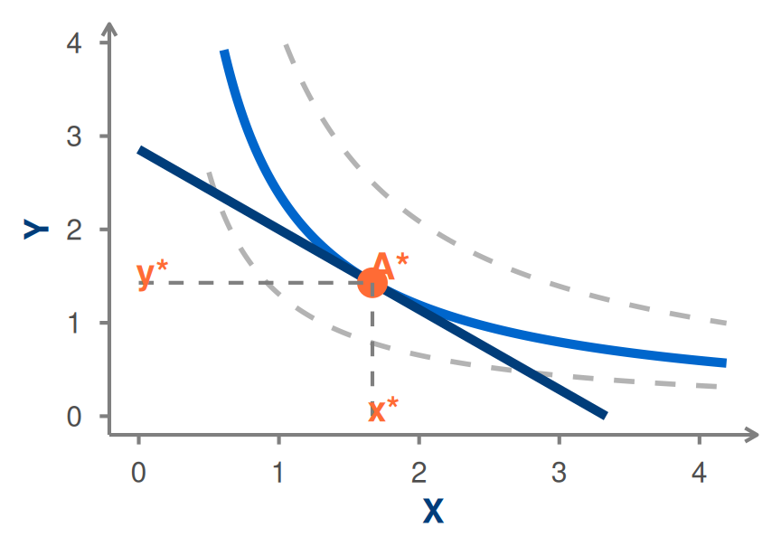
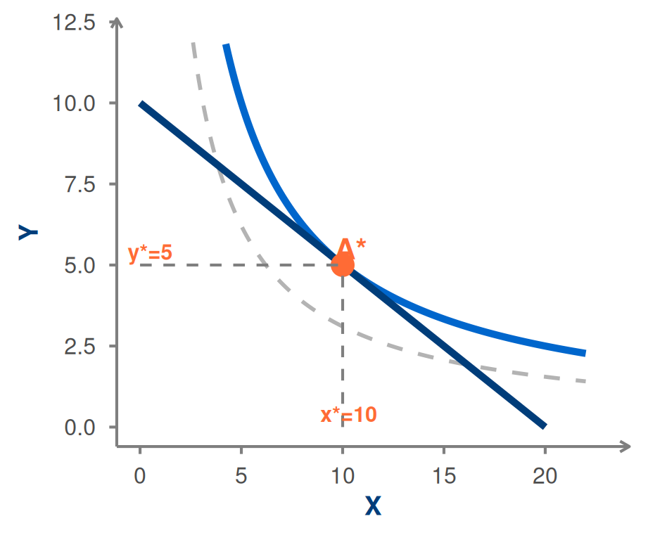

Microeconomia
Aula 6: Taxa Marginal de Substituição e Ótimo de Consumo
1 Sumário
- 🔄 Revisão: restrição orçamental e curva de indiferença
- 📐 Taxa Marginal de Substituição — definição
- 📉 TMS decrescente e a sua interpretação
- 🎯 O ótimo de consumo — geometria
- ⚖️ Condição de ótimo: \(|TMS| = p_x/p_y\)
- 💡 Interpretação económica
- 📝 Exercícios
2 Revisão — O que Temos até Agora
Restrição Orçamental: o que o consumidor pode comprar
\[X p_x + Y p_y = W \;\Longleftrightarrow\; Y = \frac{W}{p_y} - \frac{p_x}{p_y} X\]
. . .
Curva de Indiferença: o que o consumidor valoriza da mesma forma
\[\text{Conjunto de cabazes com a mesma satisfação}\]
. . .
Problema do consumidor: encontrar o cabaz na restrição orçamental que está na curva de indiferença mais alta possível.
3 Taxa Marginal de Substituição — Definição
A Taxa Marginal de Substituição (TMS) entre \(X\) e \(Y\) é a quantidade de \(Y\) a que o consumidor está disposto a prescindir para obter uma unidade adicional de X, mantendo-se indiferente.
\[TMS_{x,y} = \frac{\Delta Y}{\Delta X} \;\Bigg|_{\overline{U}} < 0\]
. . .
- O sinal é negativo — abdicar de Y para obter X
- Falamos frequentemente de \(|TMS|\) para facilitar comparações
- A TMS é o declive da curva de indiferença num ponto
4 TMS — Gráfico
5 TMS é Decrescente (em Valor Absoluto)
Ao longo de uma curva de indiferença convexa, \(|TMS|\) diminui à medida que \(X\) aumenta.
. . .
Porquê?
- Quando o consumidor tem pouco X e muito Y, valoriza muito mais uma unidade adicional de X → dispõe-se a abdicar de muito Y
- À medida que acumula mais X, cada unidade adicional vale menos — está mais próximo do ponto de saciedade
- Logo, abdica de menos Y por cada unidade adicional de X
. . .
A TMS decrescente reflete a lei da utilidade marginal decrescente — veremos a ligação formal na Aula 7.
6 TMS ao Longo da Curva

O declive das retas tangentes (em valor absoluto) vai diminuindo de A para C.
7 O Ótimo de Consumo — Geometria
O consumidor quer atingir a curva de indiferença mais alta possível, sem ultrapassar o orçamento.
. . .
O ponto ótimo \(A^*\) é aquele onde a restrição orçamental é tangente a uma curva de indiferença — o ponto de toque.

8 Condição de Ótimo
No ponto ótimo \(A^*\), a curva de indiferença é tangente à restrição orçamental.
. . .
Dois declives iguais:
- Declive da RO: \(-\dfrac{p_x}{p_y}\)
- Declive da CI: \(TMS_{x,y}\)
. . .
\[\boxed{|TMS_{x,y}| = \frac{p_x}{p_y}}\]
9 Interpretação Económica da Condição de Ótimo
\[|TMS| = \frac{p_x}{p_y}\]
. . .
| Lado | Significado |
|---|---|
| \(|TMS|\) | Taxa a que o consumidor está disposto a trocar Y por X |
| \(p_x/p_y\) | Taxa a que o mercado permite trocar Y por X |
. . .
Situações fora do ótimo:
- Se \(|TMS| > p_x/p_y\) → consumidor valoriza X mais do que o mercado cobra → deve comprar mais X e menos Y
- Se \(|TMS| < p_x/p_y\) → consumidor valoriza X menos do que o mercado cobra → deve comprar menos X e mais Y
- No ótimo: valorização subjetiva = preço de mercado ✓
10 Exemplo Numérico
Dados: \(W = 40\), \(p_x = 2\), \(p_y = 4\). A TMS do consumidor num dado ponto \((X, Y)\) é \(|TMS| = Y/X\).
. . .
Passo 1 — Condição de ótimo:
\[\frac{Y}{X} = \frac{p_x}{p_y} = \frac{2}{4} = \frac{1}{2} \;\Rightarrow\; Y = \frac{X}{2}\]
. . .
Passo 2 — Substituir na restrição orçamental:
\[2X + 4 \cdot \frac{X}{2} = 40 \;\Rightarrow\; 2X + 2X = 40 \;\Rightarrow\; X^* = 10\]
. . .
\[Y^* = \frac{10}{2} = 5\]
. . .
Verificação: \(2 \times 10 + 4 \times 5 = 20 + 20 = 40 = W\) ✓ e \(|TMS|=5/10=1/2=p_x/p_y\) ✓
11 Ótimo do Exemplo — Gráfico

12 📋 Síntese
| Conceito | Definição |
|---|---|
| TMS | Taxa de troca subjetiva de Y por X ao longo da CI |
| TMS decrescente | Quanto mais X se tem, menor o valor de mais uma unidade |
| Ótimo | Cabaz na CI mais alta que a RO permite atingir |
| Condição \(\|TMS\|=p_x/p_y\) | Igualdade entre taxa subjetiva e taxa de mercado |
. . .
Na Aula 7 veremos:
- A função de utilidade como representação das preferências
- A ligação entre TMS e utilidades marginais
- As Leis de Gossen e o significado formal do ótimo
13 📝 Escolha Múltipla — Q1
A Taxa Marginal de Substituição (TMS) entre X e Y representa:
. . .
- O rácio dos preços de X e Y no mercado
- A quantidade de Y a que o consumidor abdica para ter mais uma unidade de X, ficando indiferente
- A derivada da função de utilidade em relação a X
- O declive da restrição orçamental
. . .
Resposta: B A TMS mede a disponibilidade subjetiva para substituir Y por X, mantendo a satisfação constante — é o declive da CI.
14 📝 Escolha Múltipla — Q2
No ponto ótimo de consumo, qual a condição que se verifica?
. . .
- A TMS é máxima
- \(|TMS| = p_x / p_y\)
- O consumidor gasta igual em ambos os bens
- A utilidade é mínima ao longo da restrição orçamental
. . .
Resposta: B No ótimo, o declive da CI (TMS) iguala o declive da RO (\(-p_x/p_y\)), garantindo que a valorização subjetiva coincide com a taxa de troca de mercado.
15 📝 Exercício de Desenvolvimento
Um consumidor tem restrição orçamental \(3X + 6Y = 60\). A sua Taxa Marginal de Substituição (em valor absoluto) é \(|TMS| = 2Y/X\).
(a) Encontre o cabaz ótimo \((X^*, Y^*)\).
(b) Verifique que a condição de ótimo e o orçamento se satisfazem.
(c) Interprete economicamente o resultado: o que significa que \(|TMS| = p_x/p_y\) neste ponto?
16 📝 Solução
(a) Condição de ótimo:
\[|TMS| = \frac{p_x}{p_y} \;\Rightarrow\; \frac{2Y}{X} = \frac{3}{6} = \frac{1}{2} \;\Rightarrow\; 4Y = X\]
Substituindo na RO:
\[3(4Y) + 6Y = 60 \;\Rightarrow\; 12Y + 6Y = 60 \;\Rightarrow\; 18Y = 60 \;\Rightarrow\; Y^* = \frac{10}{3} \approx 3{,}33\]
\[X^* = 4 \times \frac{10}{3} = \frac{40}{3} \approx 13{,}33\]
(b) Verificação orçamental: \(3 \times \frac{40}{3} + 6 \times \frac{10}{3} = 40 + 20 = 60\) ✓
Verificação da condição: \(|TMS| = \frac{2 \times 10/3}{40/3} = \frac{20/3}{40/3} = \frac{1}{2} = \frac{p_x}{p_y}\) ✓
(c) No ótimo, o consumidor está disposto a trocar \(1/2\) unidade de Y por cada unidade de X — exactamente o que o mercado oferece (uma unidade de X custa o mesmo que metade de uma unidade de Y, pois \(p_x/p_y=3/6=1/2\)). Não há incentivo para reajustar o cabaz.